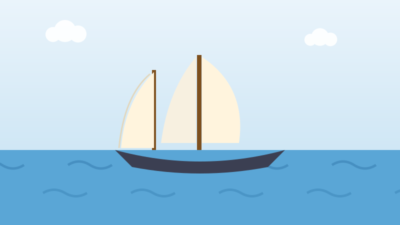

⛵ Pour les enfants
Le bateau de pêche qui a battu tout le monde
Regardez une pièce de dix cents. Ce bateau a vraiment existé, et c'était un bateau de pêche, pas un yacht de course.

Une goélette est un voilier à hauts mâts. Il y a cent ans, les équipages de pêche de la Nouvelle-Écosse partaient loin dans l'Atlantique en goélette pour pêcher la morue, et c'était un travail froid et dangereux.
Les équipages étaient fiers de leurs navires et les faisaient courir. En 1921, un bateau a été construit dans la ville de Lunenburg, en Nouvelle-Écosse, pour bien pêcher et mieux encore courir. On l'a appelé le Bluenose.
Son capitaine était Angus Walters. Dès cet automne-là, le Bluenose a remporté le trophée international des pêcheurs, la grande course entre les goélettes de pêche canadiennes et américaines.
Puis il l'a remporté de nouveau. Et encore. Pendant dix-sept ans, aucun navire ne l'a battu dans une série de courses. On l'appelait la reine de l'Atlantique Nord.
Il est devenu si célèbre qu'en 1937 son image est passée sur la pièce de dix cents, où elle se trouve encore aujourd'hui.
Le vrai Bluenose a fini sa vie en transportant des marchandises dans les Caraïbes et s'est échoué sur un récif près d'Haïti en 1946. La Nouvelle-Écosse en a construit une copie, le Bluenose II, en 1963, dans le même chantier naval. On peut encore aller le voir.
Essaie maintenant trois questions
Pas de chronomètre et aucune note à craindre. Chaque réponse t'explique pourquoi.
À propos de ce quiz
Cette histoire parle du Bluenose, une véritable goélette de pêche de Lunenburg, en Nouvelle-Écosse, restée invaincue en course pendant dix-sept ans et présente sur la pièce de dix cents depuis 1937.
Elle est écrite en phrases courtes pour les enfants de six à neuf ans, avec une image dessinée pour ce site et trois questions à la fin. Touchez le bouton de lecture à voix haute et la page lira les questions à haute voix.
À découvrir aussi
D'autres histoires vraies du Canada pour les enfants